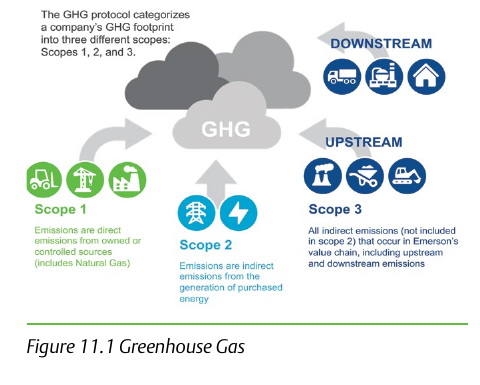

Scope 1, Scope 2, Scope 3

- 1Scope 1 — direct: emissions from sources the company itself owns or controls, including natural gas used as instrumentation/valve-actuation motive force on-site.
- 2Scope 2 — indirect, purchased energy: emissions from generating the electricity the company buys; “indirect” because the emissions physically occur at the generating plant, not at the company’s own site.
- 3Scope 3 — indirect, value-chain: every other indirect emission, upstream and downstream, split across 15 named sub-categories from purchased goods and services through the use and end-of-life of the company’s own sold products.
After Control Valve Handbook, 6th ed., Fig. 11.1 — used directly, own printed field labels retained. Component Index: cvh-cmp-greenhouse-gas-scopes.